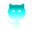
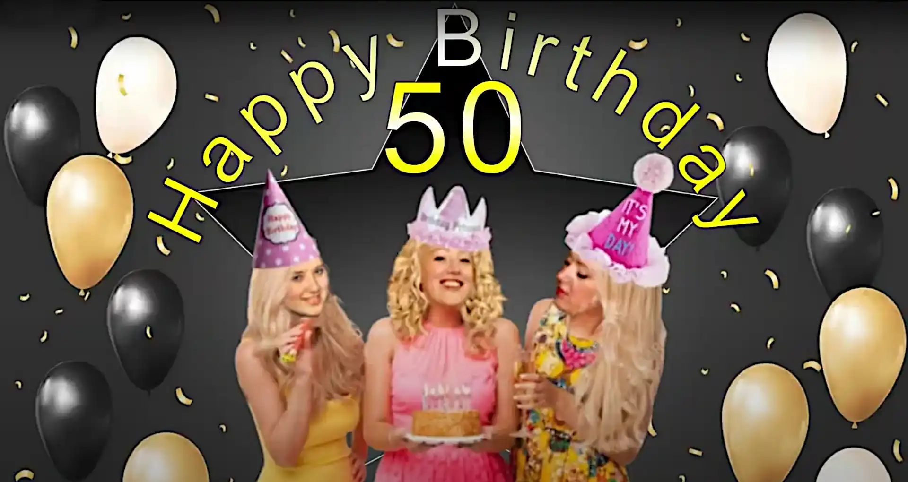

Graphic & Video Editing
Icons

This section showcases a collection of icons designed with specific purposes, enhancing usability and visual consistency across different interfaces and projects.
Video

Video Project: Created a fun and engaging news broadcast–style video using photo editing and video editing tools.
Buttons
Button Designs: A collection of buttons created for various purposes, focusing on usability, visual consistency, and responsive interactions.